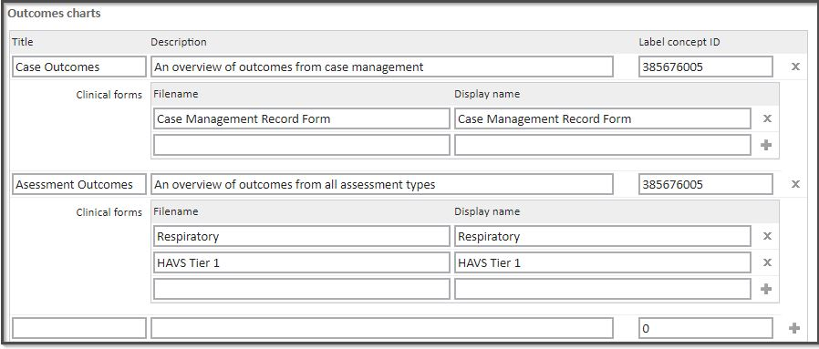
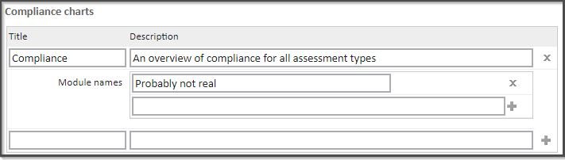
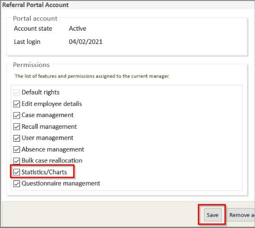
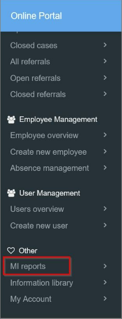
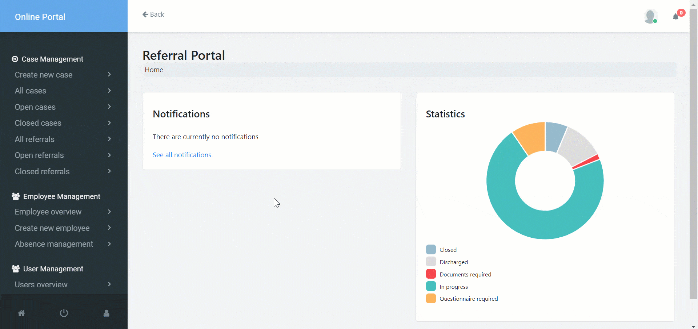

This article explains how to set up the Management Information (MI) Reporting feature for managers to view.
MI Reports is a feature of the Occupation Health portal.
It allows employers and managers to get different types of reports based on some data configuration you have set up in your chamber.
To configure the information you would like to be enabled in MI Reports:
1. Go to Start Page > Admin > Configuration > Online Portal > Occupational Health Charts
2. In bold you will see all the reports you can enable. Click 'Enabled' on the reports you want visible and make sure to save the changes.
3. To enable the Outcomes chart report, you need to add the Title, Description, Label concept ID, and add the name of the Clinical forms filename to ensure that data is visible. This is the same for Fitness charts.

4. To enable the Compliance charts
Modules with these names, which have an outcome added to the defined disease code field, will be included in the report.
To find out what Modules are available go to Start Page > Admin > Service Management > Modules. This option will show you a list of modules that you use and their respective recalls.

5. Please contact Support if you wish to set up or need help with any of the following:
Some of the report options will not require any type of setup.
Any option related to Absence will not work unless you have the system feature Absence management on.
Separately, you will need to make the Statistics/Charts option visible for each manager you wish to give access to the MI Reports. Any manager with access to view the MI reports can see all the reports, for any employee which they have permission to view (i.e. even if you don't have the case management permission, you can see the case management outcomes report).
To do this:
1. Go to Start > Find Patient
2. Input the search criteria for the manager (e.g. Surname and Name)
3. Search for and select the record from the results
4. In the Patient Record, select Referral Portal from the button bar
5. Select 'Portal Account Settings' from the menu
6. In the 'Referral Portal Account' dialogue that appears, that tick the 'Statistics/Charts' option

Once this has been enabled and saved when the manager accesses the portal, this option will now be visible under 'Other'

Managers will then be able to view reports in the 'Occupational Health Portal' under 'MI reports'.
Each report type you've enabled will show data in different chart types. Only a data type table will allow you to download the data to a CSV file.
